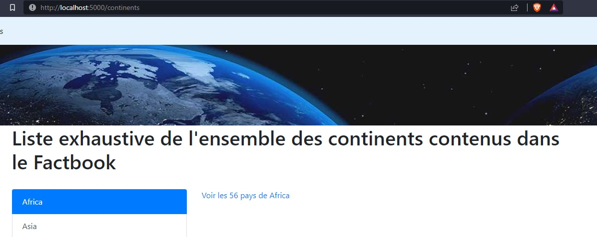

Convertir les requêtes suivantes en requêtes SQLAlchemy:
SELECT *
FROM geography a
WHERE a.major_aquifers = 'Congo Basin'
SELECT *
FROM elevation a
WHERE (a.lowest_point = 'Atlantic Ocean 0 m' OR a.lowest_point = 'Baltic Sea 0 m')
AND a.mean_elevation IS NOT NULL AND a.mean_elevation != ""
SELECT *
FROM country a
INNER JOIN country_map b on b.id = a.id
INNER JOIN map c on b.map_ref = c.name
SELECT *
FROM country a
INNER JOIN geography b on b.id = a.id
SELECT b.name, a.coordinates, a.climate
FROM geography a
INNER JOIN country b on b.id = a.id
WHERE a.major_aquifers = 'Congo Basin'
SELECT a.name, count(a.id)
FROM country a
INNER JOIN country_resources b on b.id = a.id
INNER JOIN resources c on c.id = b.resource
GROUP BY a.id
HAVING count(a.id)>10
SELECT a.name, c.name
FROM country a
INNER JOIN country_resources b on b.id = a.id
INNER JOIN resources c on c.id = b.resource
ORDER BY a.name DESC, c.name ASC
Résultat attendu: Un fichier ressemblant à ce qui suit:
# Tout sélectionner
#SELECT *
#FROM country
from ..models.factbook import Country
Country.query.all()
Rendu possible:
Créer une route Flask /resources/<nom_pays>/<page> affichant les ressources du pays demandé en ajoutant une pagination dans les résultats.
Résultat attendu: pour http://localhost:5000/resources/France/2
Rendu possible:
A partir des données du Factbook, créer une application qui contient les routes suivantes (avec de la pagination si besoin, et des liens vers des pages):
/pays: affiche tous les pays/pays/<nom_pays>: affiche autant de données que possible sur le pays demandé/continents: affiche tous les continents/continents/<nom_continent>: affiche tous les pays du continent demandé/ressources: affiche toutes les ressources/ressources/<nom_ressource>: affiche les pays qui ont cette ressourceRésultat attendu:
http://localhost:5000/continentshttp://localhost:5000/continents/EuropeRendu possible:
Traduire les requêtes SQL suivantes en code requête SQLAlchemy. Les requêtes SQL sont volontairement écrites sur des tables inexistantes, seules les quelques lignes Python sont à écrire, aucune application ou base de données n'est requise.
SELECT *
FROM users
WHERE name ILIKE '%luc%'
SELECT *
FROM users
WHERE identifiant NOT IN ( 2, 5, 9 )
Imaginons que la base de données est PostGreSQL:
SELECT *
FROM users
WHERE REGEXP_MATCHES(name, '^.*(L|l)uc.*')
Toujours avec PostGreSQL:
SELECT *
FROM users
WHERE REGEXP_REPLACE(name, '^.*(L|l)uc.*', 'Simplement Luc')
Résultat attendu: Un fichier ressemblant à ce qui suit:
# Tout sélectionner
#SELECT *
#FROM country
from ..models.factbook import Country
Country.query.all()
Rendu possible:
A partir de l'application de REV-3, pour les routes /continents et /ressources, afficher dans le lien "Voir les pays contenant ..." le nombre de pays concernés. Par exemple, il devra être affiché "Voir les 64 pays contenant du petroleum".
Résultat attendu:
http://localhost:5000/continents
Rendu possible:
La création des modèles de base de données avec Flask-SQLAlchemy a permis la création de classes Python, comme Country ou bien Resources. Jusqu'à présent, seules des propriétés de classe sont définies, soit les noms des colonnes de la table en base de données. Dans la séance 6, nous utiliserons les méthodes de classes, c'est à dire des fonctions définies dans les classes. Le but de cet exercice est de mettre progressivement un pied dans les méthodes de classe.
Pour commencer, créer la méthode get_resourceid() de la classe Resources. En appelant Resources.get_resourceid(<objet_sqlalchemy>), le résultat suivant devra être retourné: PET.
Exemple:
print(Resources.get_resourceid(Resources.query.filter(Resources.name == "petroleum").first()))
PET
Cette première méthode n'est pas très utile. Nous pouvons en créer une deuxième dans la classe Resources pour retourner cette fois la liste des pays qui contiennent cette ressource. Ainsi, Resources.get_pays(<objet_sqlalchemy>) renverra une liste de pays.
Exemple:
print(Resources.get_pays( Resources.query.filter(Resources.name == 'feldspar').first()))
['Angola', 'Hong Kong', 'France', 'Italy', 'Sweden', 'Turkey']
Enfin, on peut remarquer que les valeurs numériques en base de données ne sont pas formattées correctement et ne sont pas exploitables en l'état. prenons le cas de geography.coastline: il y a 205 valeurs différentes, exprimées en chaînes de caractères et dans le format américain.
998 km
1,600 km
0 km (landlocked)
121 km
169 km
37 km
402 km
340 km
965 km
314 km
2,450 km
...
Afin d'exploiter au mieux ces données dans le futur, il serait utile de créer une fonction qui puisse corriger ce svaleurs et ne récupérer que les nombres, pour n'importe quel champ de notre modèle de données. Pistes de réflexion:
utils dans l'application peut être une bonne chose pour y mettre du code factorisé qui n'est pas directement un modèle de base de donnéesGeography.coastlineGeography.irrigated_landBoundaries.totalGeography.coastline_int(Geography.query.filter(Geography.id == 'bn').first()): 121.